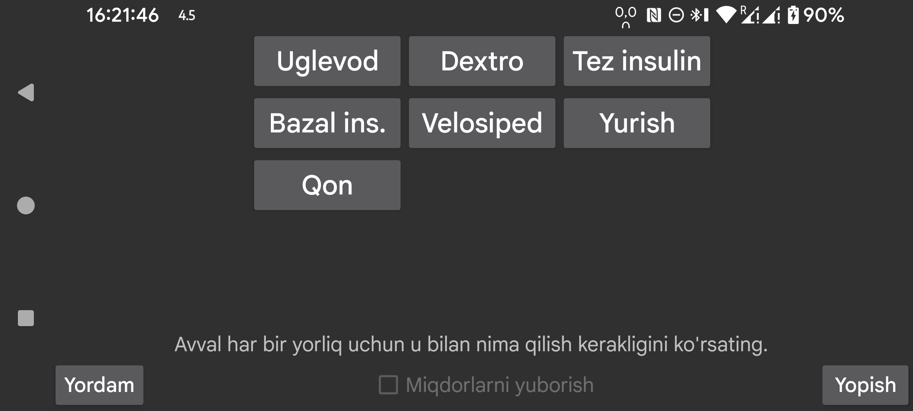

"Miqdorlarni yuborish" ni yoqing, shunda Miqdorlar Libreview’ga yuboriladi. "Miqdorlarni yuborish" ni yoqishdan oldin, har bir yorliq uchun ushbu yorliq ostida kiritilgan miqdorlar Libreview’ga qanday yuborilishini ko'rsatishingiz kerak. Yorliqlarning o'zini Chap menyu->Sozlamalar->"Raqam yorliqlari" bo'limida yaratish, o'zgartirish va o'chirish mumkin.
Libreview’ga izoh sifatida yuboriladigan yorliqlar uchun quyidagi cheklov amal qiladi: yorliqni o'zgartirgandan so'ng, avvalgi yorliq ostida kiritilgan miqdorlarni o'chirish yoki o'zgartirish Libreview da o'zgarish keltirib chiqarmaydi. Masalan, avval Bike yorlig'i bilan 20 kiritgan bo'lsangiz, keyin Bike ni Cycling ga o'zgartirib 20 ni 25 ga almashtirsangiz, bu Libreview da o'zgarish qilmaydi; Libreview da ham Bike 20, ham Cycling 25 mavjud bo'ladi. Qila oladigan yagona ish - Libreview dagi joriy qurilmalarni o'chirib, Juggluco da Ma'lumotni qayta yuborish ni bosish.